Perante o poder público
Levamos as demandas dos associados aos órgãos municipais, estaduais e federais e às concessionárias de serviço público.
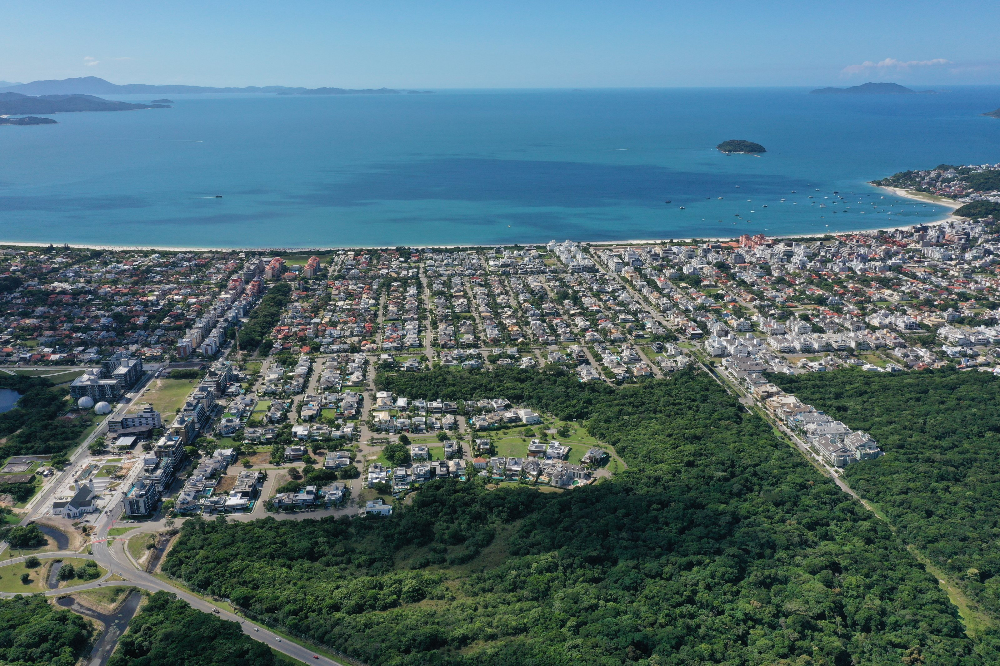
Desde 1º de dezembro de 1986, a AJIN representa associados, proprietários e moradores, e cuida da identidade do bairro.
A AJIN é uma associação civil, sem fins econômicos, criada por quem vive o bairro para cuidar dele.
Representamos associados, proprietários e moradores perante o poder público e as instituições, e cuidamos todos os dias do que faz o bairro ser o que é: segurança, espaços públicos, natureza e convivência.
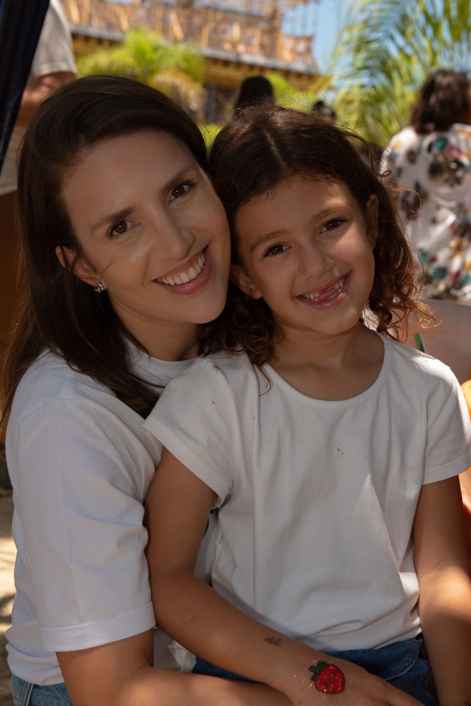
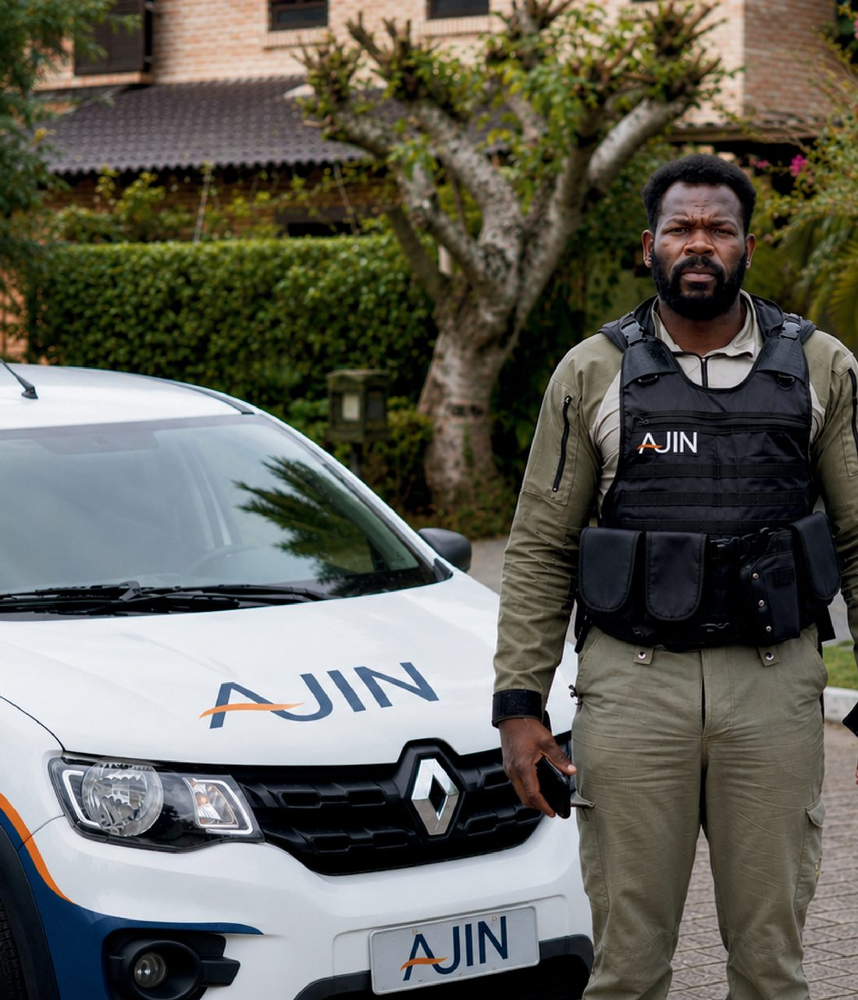

Representar é o que nos define desde a fundação. Está no estatuto: levar a palavra dos associados aonde as decisões sobre Jurerê Internacional são tomadas.
Levamos as demandas dos associados aos órgãos municipais, estaduais e federais e às concessionárias de serviço público.
Representamos os associados junto ao empreendedor do bairro e a quem atua em Jurerê Internacional.
Acompanhamos o uso do solo e os projetos que mudam o bairro, para que ele siga fiel ao seu desenho original.
Aproximamos os associados com atividades sociais, culturais e de lazer, e incentivamos o voluntariado.
Cuidar do território é cuidar de quem vive nele.
Participamos dos espaços de diálogo com o poder público e as forças de segurança, e mantemos conversa permanente com quem decide sobre o bairro.
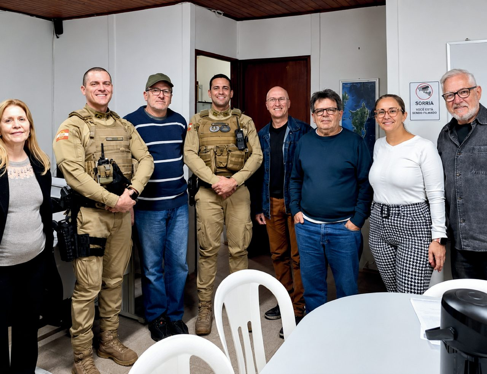
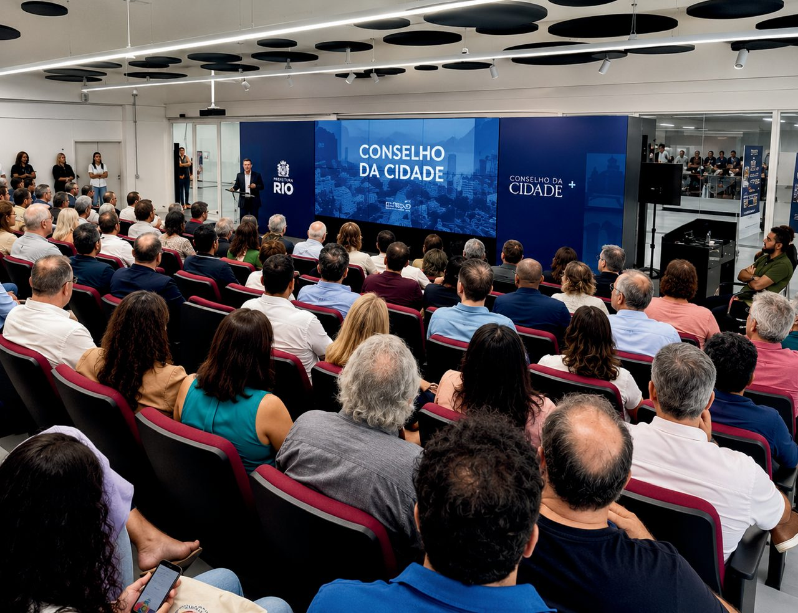
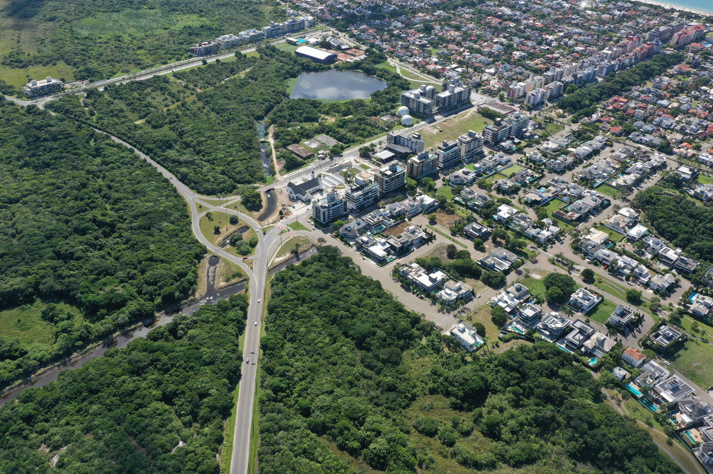
Representar só tem força quando vem acompanhado de presença. É o trabalho de todo dia, muitas vezes silencioso.
Central de monitoramento, rondas e vistorias, 24 horas por dia, em articulação com as forças de segurança pública.
Diálogo permanente com o poder público e as instituições, levando as demandas dos associados.
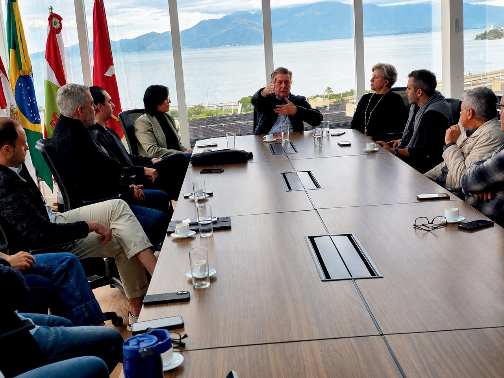
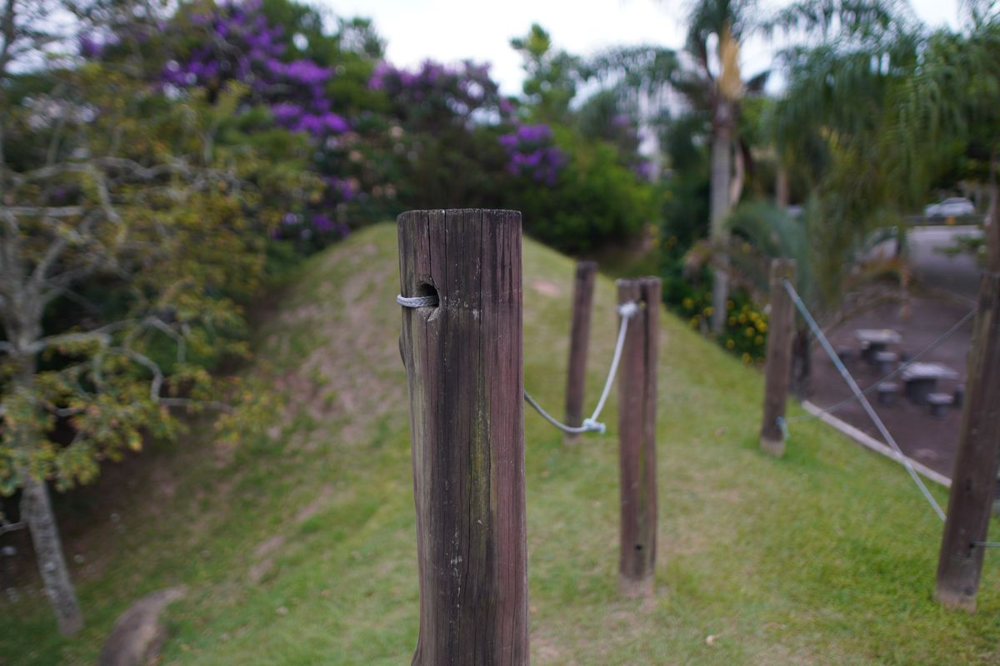
Pé-de-Fruta, Praça dos Morrinhos e Parquinho dos Curumins, mantidos pela AJIN.
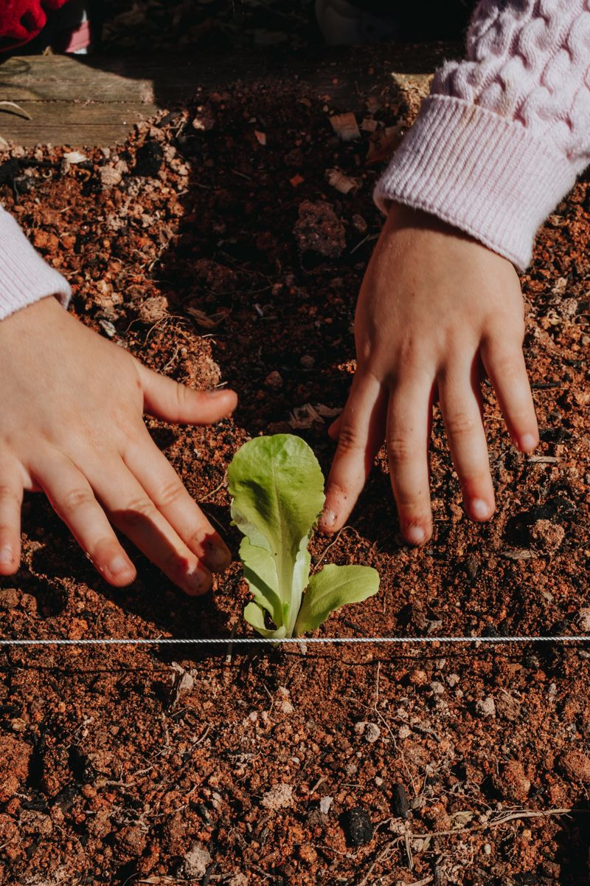
Plantios, horta comunitária e educação ambiental.
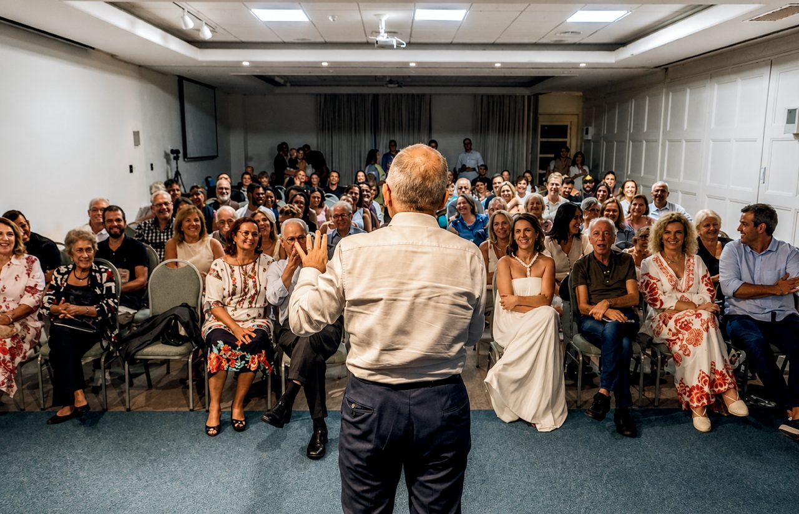
Encontros, rodas de conversa e eventos que aproximam as gerações.
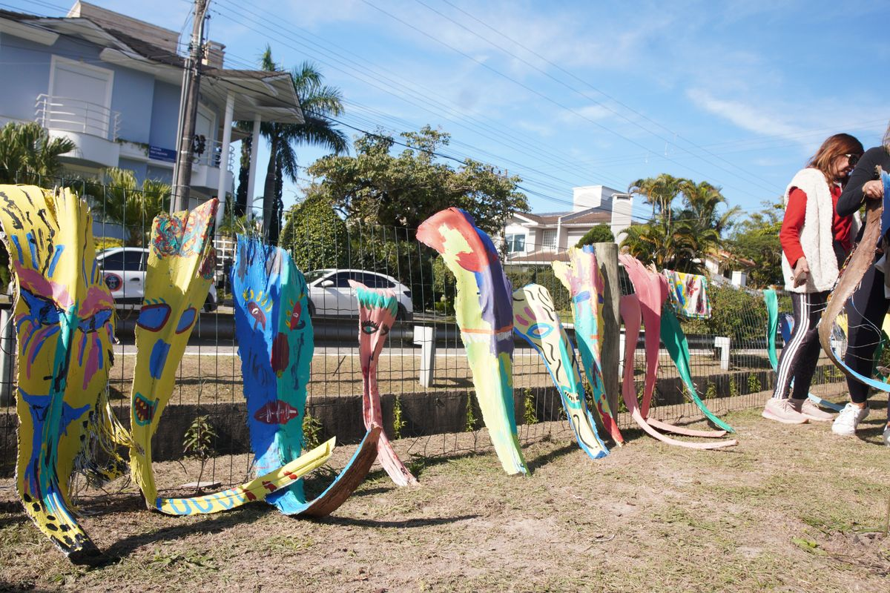
Diretores, conselheiros, associados e moradores que doam tempo ao bairro.
Voe sobre o bairro e encontre as áreas que a AJIN adotou. Em cada uma, veja o lugar e leia o que foi feito ali.
Arraste para navegar, gire com dois dedos ou com o botão direito, e toque nos pontos laranja.
Da inauguração da horta à temporada de verão. No caminho, o lançamento do livro dos 45 anos do bairro e os 40 anos da AJIN.
Quem decide é eleito entre os associados, presta contas a eles e trabalha sem remuneração. É assim que o estatuto organiza a AJIN.
Formada por todos os associados. Elege os conselhos e a diretoria e é a instância final de decisão.
Presidente e vice podem ser reeleitos uma única vez seguida, para que a gestão se renove.
Nenhum cargo de associado na Diretoria, no Conselho Deliberativo ou no Conselho Fiscal é remunerado.Estatuto da AJIN, artigo 37
Ser associado é participar das decisões, acompanhar o que acontece e ajudar a construir o futuro do bairro.
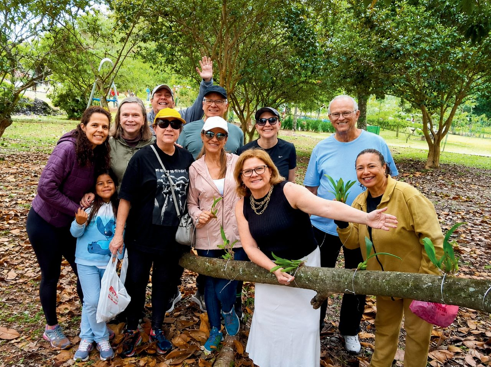